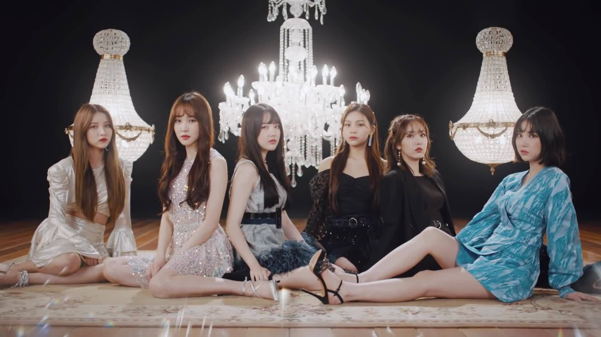

GFriend (Korean: 여자친구; RR: Yeoja Chingu) is a six-member South Korean girl group formed by Source Music in 2015.The group consists of Sowon, Yerin, Eunha, Yuju, SinB, and Umji. They made their debut with the EP Season of Glass on January 15, 2015. GFriend won several 2015 female rookie awards and has garnered momentum since their debut despite being from a small company.

In 2016, they continued their success with their third EP, Snowflake, and won first place on many music shows with the title song, "Rough". They released their first full-length album, LOL, in July 2016. In 2017, GFriend made a comeback with a new concept with their fourth EP, The Awakening, and the pre-orders for the album exceeded 100,000 units.GFriend released their fifth EP, Parallel, in August 2017, and the extended play was re-released a month later under the title Rainbow. In 2018, GFriend held their first concert since debut called Season of GFriend and later their first Asia Tour with the same name.GFriend released their sixth EP, Time for the Moon Night, in April 2018 and the special EP Sunny Summer in July 2018. GFriend made an official Japanese debut with a compilation album, GFriend 1st Best, in May 2018. In January 2019, GFriend released their second full-length album, Time For Us.